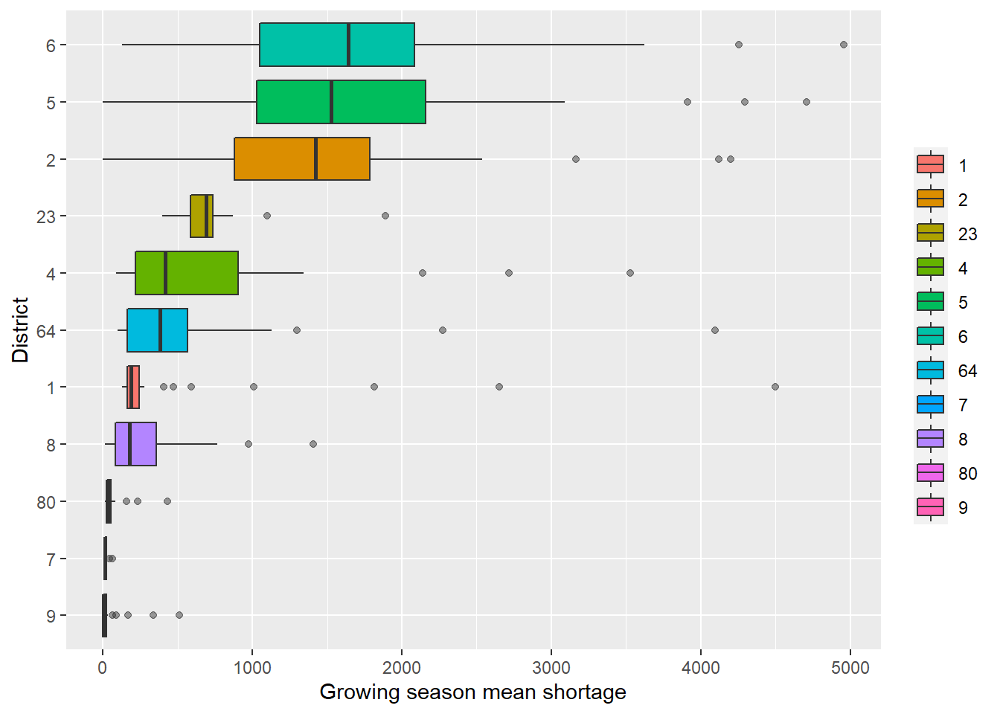
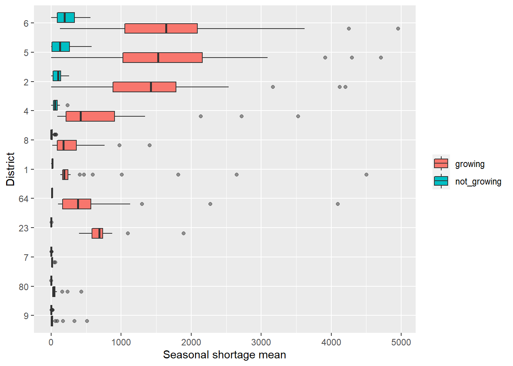
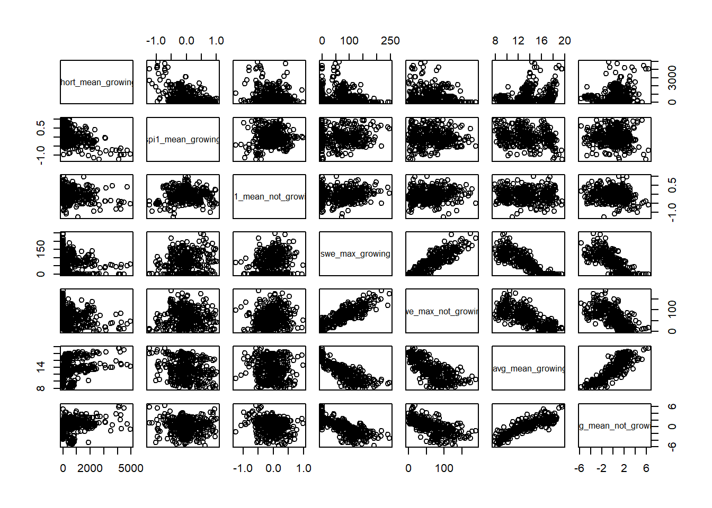
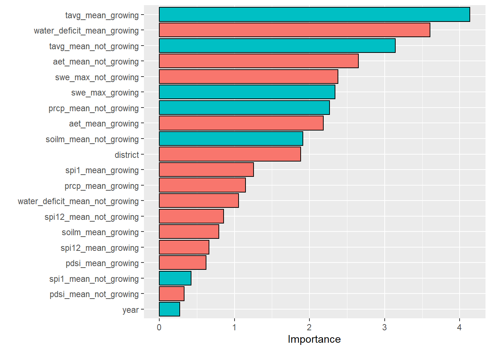
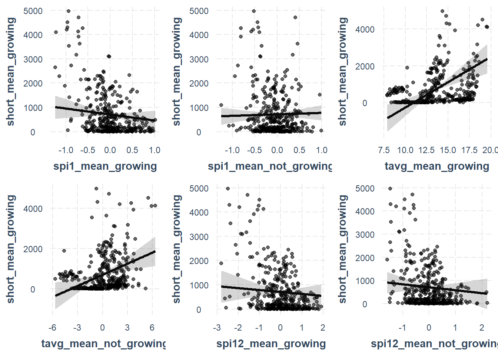
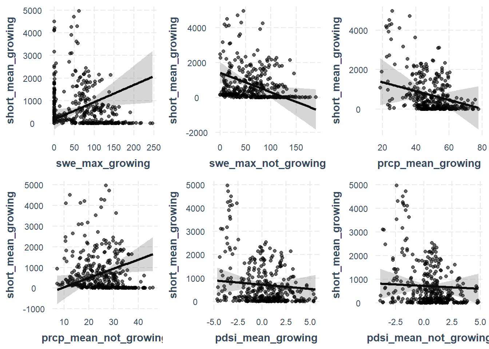
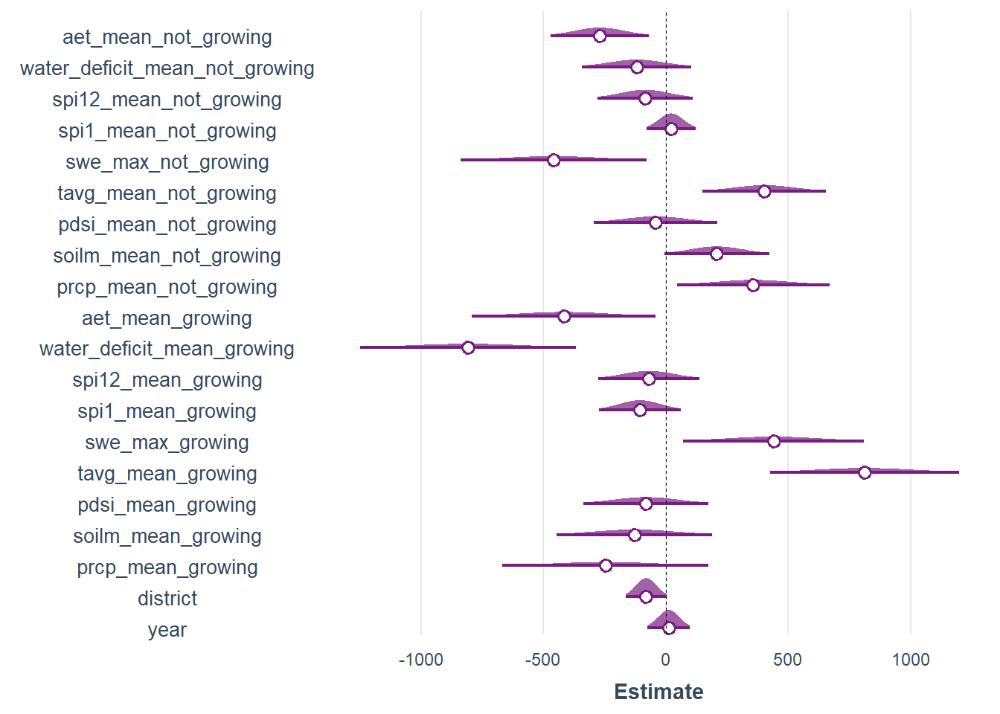
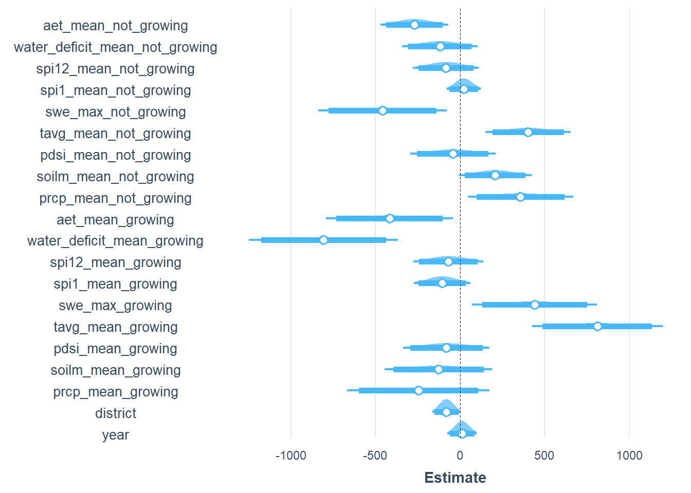
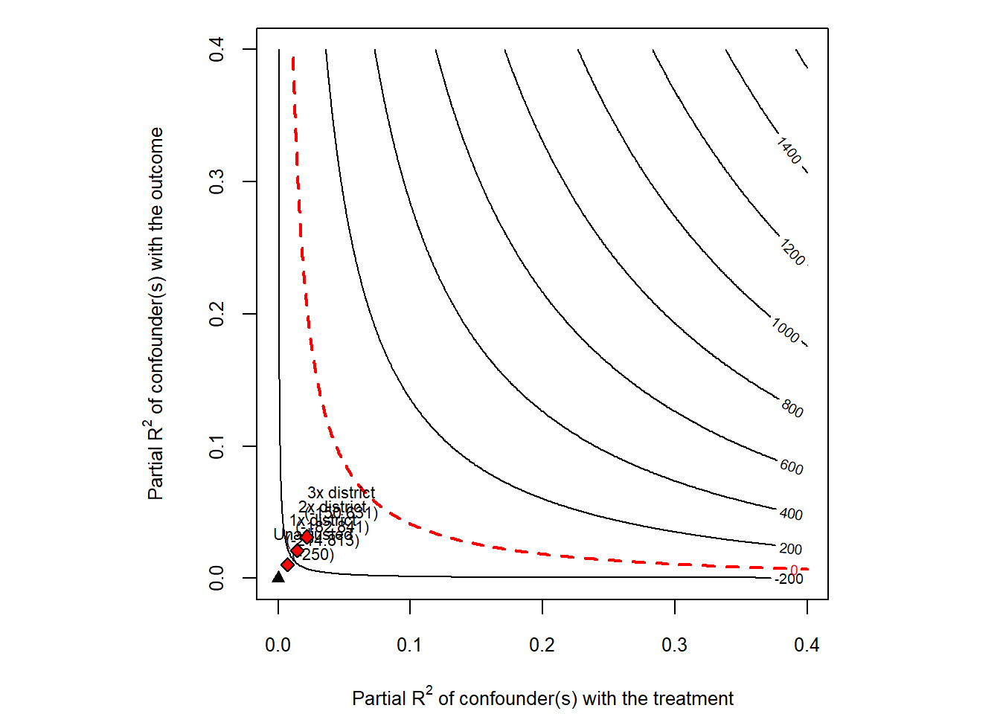

CPO
Explority data analysis
Angus Watters
06/09/2021
# libraries
library(tidyverse)
library(tidymodels) # modeling
library(jtools) # Linear regression exploration
library(vip) # Variable importance
library(sensemakr) # sensitivty analysis
library(psych) # correlation functionsdf <- readRDS("C:/Users/angus/OneDrive/Desktop/lynker/CPO/data/model_data/model_data_non_spatial.rds")df <- df %>%
mutate(month = lubridate::month(date), year = lubridate::year(date)) %>%
mutate(season = case_when(
month %in% c(4, 5, 6, 7, 8, 9) ~ "growing",
month %in% c(1, 2, 3, 10, 11, 12) ~"not_growing"
)
) %>%
group_by(year, season, district) %>% # calculate averages during growing and not growing seasons
summarize(
short_mean = mean(short),
prcp_mean = mean(prcp),
soilm_mean = mean(soilm),
pdsi_mean = mean(pdsi_terra),
tavg_mean = mean(tavg_c),
swe_max = max(swe),
spi1_mean = mean(spi1),
spi12_mean = mean(spi12),
water_deficit_mean = mean(water_deficit),
aet_mean = mean(aet)
)
df$season <- as.factor(df$season)
# seperate dataframes into growing and not growing, widen dataframe and make average columns for growing and not growing
grow <- df %>%
filter(season == "growing") %>%
pivot_wider(names_from = "season", values_from = c(short_mean:aet_mean))
not_grow <- df %>%
filter(season == "not_growing", year > 1979) %>%
pivot_wider(names_from = "season", values_from = c(short_mean:aet_mean))
# join wider growing and not growing season dataframes
season_shorts <- inner_join(grow, not_grow, by = c("district", "year"))season_shorts %>%
mutate(district = as.character(district)) %>%
ggplot(aes(fct_reorder(district, short_mean_growing),
short_mean_growing,
fill = district
)) +
geom_boxplot(outlier.alpha = 0.5) +
coord_flip() +
labs(
fill = NULL, x = "District",
y = "Growing season mean shortage"
)
df %>%
mutate(district = as.character(district)) %>%
ggplot(aes(fct_reorder(district, short_mean),
short_mean,
fill = season
)) +
geom_boxplot(outlier.alpha = 0.5) +
coord_flip() +
labs(
fill = NULL, x = "District",
y = "Seasonal shortage mean"
)
Correlation
Correlation matrix
# isolate mean shortage during growing season
growing_season <- dplyr::select(season_shorts, -short_mean_not_growing)
DT::datatable(print(corr.test(growing_season,
use = "pairwise",
method = "pearson",
adjust = "none"), short = FALSE))## Call:corr.test(x = growing_season, use = "pairwise", method = "pearson",
## adjust = "none")
## Correlation matrix
## year district short_mean_growing prcp_mean_growing soilm_mean_growing pdsi_mean_growing
## year 1.00 0.00 0.20 -0.22 -0.13 -0.28
## district 0.00 1.00 -0.24 0.07 -0.01 -0.01
## short_mean_growing 0.20 -0.24 1.00 -0.45 -0.20 -0.36
## prcp_mean_growing -0.22 0.07 -0.45 1.00 0.31 0.56
## soilm_mean_growing -0.13 -0.01 -0.20 0.31 1.00 0.42
## pdsi_mean_growing -0.28 -0.01 -0.36 0.56 0.42 1.00
## tavg_mean_growing 0.11 -0.19 0.34 -0.15 -0.74 -0.18
## swe_max_growing -0.12 0.12 -0.23 0.19 0.88 0.36
## spi1_mean_growing -0.17 0.00 -0.45 0.73 0.15 0.42
## spi12_mean_growing -0.22 0.01 -0.41 0.63 0.32 0.79
## water_deficit_mean_growing 0.17 -0.15 0.45 -0.57 -0.77 -0.47
## aet_mean_growing -0.22 0.11 -0.52 0.90 0.45 0.60
## prcp_mean_not_growing -0.06 -0.11 -0.13 0.06 0.72 0.20
## soilm_mean_not_growing -0.23 -0.05 -0.14 0.21 0.87 0.40
## pdsi_mean_not_growing -0.26 -0.01 -0.34 0.47 0.27 0.86
## tavg_mean_not_growing 0.16 -0.26 0.30 -0.01 -0.56 -0.15
## swe_max_not_growing -0.07 0.06 -0.19 -0.02 0.81 0.32
## spi1_mean_not_growing -0.11 0.02 -0.17 0.24 0.13 0.33
## spi12_mean_not_growing -0.27 0.01 -0.38 0.53 0.24 0.69
## water_deficit_mean_not_growing 0.01 -0.05 0.15 0.03 -0.52 -0.08
## aet_mean_not_growing 0.00 -0.27 0.06 0.05 0.05 -0.10
## tavg_mean_growing swe_max_growing spi1_mean_growing spi12_mean_growing
## year 0.11 -0.12 -0.17 -0.22
## district -0.19 0.12 0.00 0.01
## short_mean_growing 0.34 -0.23 -0.45 -0.41
## prcp_mean_growing -0.15 0.19 0.73 0.63
## soilm_mean_growing -0.74 0.88 0.15 0.32
## pdsi_mean_growing -0.18 0.36 0.42 0.79
## tavg_mean_growing 1.00 -0.86 -0.24 -0.17
## swe_max_growing -0.86 1.00 0.12 0.25
## spi1_mean_growing -0.24 0.12 1.00 0.60
## spi12_mean_growing -0.17 0.25 0.60 1.00
## water_deficit_mean_growing 0.87 -0.80 -0.51 -0.45
## aet_mean_growing -0.32 0.35 0.66 0.60
## prcp_mean_not_growing -0.64 0.70 0.16 0.09
## soilm_mean_not_growing -0.65 0.79 0.12 0.30
## pdsi_mean_not_growing -0.14 0.24 0.47 0.73
## tavg_mean_not_growing 0.87 -0.77 -0.05 -0.03
## swe_max_not_growing -0.74 0.88 -0.02 0.17
## spi1_mean_not_growing -0.08 0.14 0.06 0.28
## spi12_mean_not_growing -0.19 0.25 0.57 0.82
## water_deficit_mean_not_growing 0.71 -0.58 -0.16 0.01
## aet_mean_not_growing 0.04 -0.10 0.23 -0.05
## water_deficit_mean_growing aet_mean_growing prcp_mean_not_growing soilm_mean_not_growing
## year 0.17 -0.22 -0.06 -0.23
## district -0.15 0.11 -0.11 -0.05
## short_mean_growing 0.45 -0.52 -0.13 -0.14
## prcp_mean_growing -0.57 0.90 0.06 0.21
## soilm_mean_growing -0.77 0.45 0.72 0.87
## pdsi_mean_growing -0.47 0.60 0.20 0.40
## tavg_mean_growing 0.87 -0.32 -0.64 -0.65
## swe_max_growing -0.80 0.35 0.70 0.79
## spi1_mean_growing -0.51 0.66 0.16 0.12
## spi12_mean_growing -0.45 0.60 0.09 0.30
## water_deficit_mean_growing 1.00 -0.70 -0.58 -0.67
## aet_mean_growing -0.70 1.00 0.26 0.38
## prcp_mean_not_growing -0.58 0.26 1.00 0.72
## soilm_mean_not_growing -0.67 0.38 0.72 1.00
## pdsi_mean_not_growing -0.39 0.51 0.29 0.41
## tavg_mean_not_growing 0.72 -0.20 -0.54 -0.52
## swe_max_not_growing -0.63 0.27 0.77 0.75
## spi1_mean_not_growing -0.18 0.27 0.28 0.13
## spi12_mean_not_growing -0.42 0.55 0.24 0.36
## water_deficit_mean_not_growing 0.59 -0.13 -0.80 -0.57
## aet_mean_not_growing 0.00 -0.01 0.50 0.14
## pdsi_mean_not_growing tavg_mean_not_growing swe_max_not_growing spi1_mean_not_growing
## year -0.26 0.16 -0.07 -0.11
## district -0.01 -0.26 0.06 0.02
## short_mean_growing -0.34 0.30 -0.19 -0.17
## prcp_mean_growing 0.47 -0.01 -0.02 0.24
## soilm_mean_growing 0.27 -0.56 0.81 0.13
## pdsi_mean_growing 0.86 -0.15 0.32 0.33
## tavg_mean_growing -0.14 0.87 -0.74 -0.08
## swe_max_growing 0.24 -0.77 0.88 0.14
## spi1_mean_growing 0.47 -0.05 -0.02 0.06
## spi12_mean_growing 0.73 -0.03 0.17 0.28
## water_deficit_mean_growing -0.39 0.72 -0.63 -0.18
## aet_mean_growing 0.51 -0.20 0.27 0.27
## prcp_mean_not_growing 0.29 -0.54 0.77 0.28
## soilm_mean_not_growing 0.41 -0.52 0.75 0.13
## pdsi_mean_not_growing 1.00 -0.12 0.24 0.36
## tavg_mean_not_growing -0.12 1.00 -0.67 -0.19
## swe_max_not_growing 0.24 -0.67 1.00 0.12
## spi1_mean_not_growing 0.36 -0.19 0.12 1.00
## spi12_mean_not_growing 0.80 -0.12 0.15 0.39
## water_deficit_mean_not_growing -0.25 0.69 -0.56 -0.24
## aet_mean_not_growing 0.14 0.18 -0.07 0.23
## spi12_mean_not_growing water_deficit_mean_not_growing aet_mean_not_growing
## year -0.27 0.01 0.00
## district 0.01 -0.05 -0.27
## short_mean_growing -0.38 0.15 0.06
## prcp_mean_growing 0.53 0.03 0.05
## soilm_mean_growing 0.24 -0.52 0.05
## pdsi_mean_growing 0.69 -0.08 -0.10
## tavg_mean_growing -0.19 0.71 0.04
## swe_max_growing 0.25 -0.58 -0.10
## spi1_mean_growing 0.57 -0.16 0.23
## spi12_mean_growing 0.82 0.01 -0.05
## water_deficit_mean_growing -0.42 0.59 0.00
## aet_mean_growing 0.55 -0.13 -0.01
## prcp_mean_not_growing 0.24 -0.80 0.50
## soilm_mean_not_growing 0.36 -0.57 0.14
## pdsi_mean_not_growing 0.80 -0.25 0.14
## tavg_mean_not_growing -0.12 0.69 0.18
## swe_max_not_growing 0.15 -0.56 -0.07
## spi1_mean_not_growing 0.39 -0.24 0.23
## spi12_mean_not_growing 1.00 -0.18 0.14
## water_deficit_mean_not_growing -0.18 1.00 -0.46
## aet_mean_not_growing 0.14 -0.46 1.00
## Sample Size
## [1] 363
## Probability values (Entries above the diagonal are adjusted for multiple tests.)
## year district short_mean_growing prcp_mean_growing soilm_mean_growing pdsi_mean_growing
## year 0.00 1.00 0.00 0.00 0.01 0.00
## district 1.00 0.00 0.00 0.21 0.90 0.79
## short_mean_growing 0.00 0.00 0.00 0.00 0.00 0.00
## prcp_mean_growing 0.00 0.21 0.00 0.00 0.00 0.00
## soilm_mean_growing 0.01 0.90 0.00 0.00 0.00 0.00
## pdsi_mean_growing 0.00 0.79 0.00 0.00 0.00 0.00
## tavg_mean_growing 0.04 0.00 0.00 0.00 0.00 0.00
## swe_max_growing 0.02 0.03 0.00 0.00 0.00 0.00
## spi1_mean_growing 0.00 0.94 0.00 0.00 0.00 0.00
## spi12_mean_growing 0.00 0.80 0.00 0.00 0.00 0.00
## water_deficit_mean_growing 0.00 0.00 0.00 0.00 0.00 0.00
## aet_mean_growing 0.00 0.04 0.00 0.00 0.00 0.00
## prcp_mean_not_growing 0.29 0.03 0.01 0.24 0.00 0.00
## soilm_mean_not_growing 0.00 0.33 0.01 0.00 0.00 0.00
## pdsi_mean_not_growing 0.00 0.85 0.00 0.00 0.00 0.00
## tavg_mean_not_growing 0.00 0.00 0.00 0.81 0.00 0.00
## swe_max_not_growing 0.21 0.28 0.00 0.71 0.00 0.00
## spi1_mean_not_growing 0.04 0.77 0.00 0.00 0.01 0.00
## spi12_mean_not_growing 0.00 0.82 0.00 0.00 0.00 0.00
## water_deficit_mean_not_growing 0.80 0.31 0.00 0.61 0.00 0.11
## aet_mean_not_growing 0.99 0.00 0.22 0.31 0.33 0.07
## tavg_mean_growing swe_max_growing spi1_mean_growing spi12_mean_growing
## year 0.04 0.02 0.00 0.00
## district 0.00 0.03 0.94 0.80
## short_mean_growing 0.00 0.00 0.00 0.00
## prcp_mean_growing 0.00 0.00 0.00 0.00
## soilm_mean_growing 0.00 0.00 0.00 0.00
## pdsi_mean_growing 0.00 0.00 0.00 0.00
## tavg_mean_growing 0.00 0.00 0.00 0.00
## swe_max_growing 0.00 0.00 0.03 0.00
## spi1_mean_growing 0.00 0.03 0.00 0.00
## spi12_mean_growing 0.00 0.00 0.00 0.00
## water_deficit_mean_growing 0.00 0.00 0.00 0.00
## aet_mean_growing 0.00 0.00 0.00 0.00
## prcp_mean_not_growing 0.00 0.00 0.00 0.08
## soilm_mean_not_growing 0.00 0.00 0.02 0.00
## pdsi_mean_not_growing 0.01 0.00 0.00 0.00
## tavg_mean_not_growing 0.00 0.00 0.34 0.53
## swe_max_not_growing 0.00 0.00 0.73 0.00
## spi1_mean_not_growing 0.12 0.01 0.25 0.00
## spi12_mean_not_growing 0.00 0.00 0.00 0.00
## water_deficit_mean_not_growing 0.00 0.00 0.00 0.87
## aet_mean_not_growing 0.48 0.05 0.00 0.30
## water_deficit_mean_growing aet_mean_growing prcp_mean_not_growing soilm_mean_not_growing
## year 0.00 0.00 0.29 0.00
## district 0.00 0.04 0.03 0.33
## short_mean_growing 0.00 0.00 0.01 0.01
## prcp_mean_growing 0.00 0.00 0.24 0.00
## soilm_mean_growing 0.00 0.00 0.00 0.00
## pdsi_mean_growing 0.00 0.00 0.00 0.00
## tavg_mean_growing 0.00 0.00 0.00 0.00
## swe_max_growing 0.00 0.00 0.00 0.00
## spi1_mean_growing 0.00 0.00 0.00 0.02
## spi12_mean_growing 0.00 0.00 0.08 0.00
## water_deficit_mean_growing 0.00 0.00 0.00 0.00
## aet_mean_growing 0.00 0.00 0.00 0.00
## prcp_mean_not_growing 0.00 0.00 0.00 0.00
## soilm_mean_not_growing 0.00 0.00 0.00 0.00
## pdsi_mean_not_growing 0.00 0.00 0.00 0.00
## tavg_mean_not_growing 0.00 0.00 0.00 0.00
## swe_max_not_growing 0.00 0.00 0.00 0.00
## spi1_mean_not_growing 0.00 0.00 0.00 0.01
## spi12_mean_not_growing 0.00 0.00 0.00 0.00
## water_deficit_mean_not_growing 0.00 0.01 0.00 0.00
## aet_mean_not_growing 0.96 0.88 0.00 0.01
## pdsi_mean_not_growing tavg_mean_not_growing swe_max_not_growing spi1_mean_not_growing
## year 0.00 0.00 0.21 0.04
## district 0.85 0.00 0.28 0.77
## short_mean_growing 0.00 0.00 0.00 0.00
## prcp_mean_growing 0.00 0.81 0.71 0.00
## soilm_mean_growing 0.00 0.00 0.00 0.01
## pdsi_mean_growing 0.00 0.00 0.00 0.00
## tavg_mean_growing 0.01 0.00 0.00 0.12
## swe_max_growing 0.00 0.00 0.00 0.01
## spi1_mean_growing 0.00 0.34 0.73 0.25
## spi12_mean_growing 0.00 0.53 0.00 0.00
## water_deficit_mean_growing 0.00 0.00 0.00 0.00
## aet_mean_growing 0.00 0.00 0.00 0.00
## prcp_mean_not_growing 0.00 0.00 0.00 0.00
## soilm_mean_not_growing 0.00 0.00 0.00 0.01
## pdsi_mean_not_growing 0.00 0.02 0.00 0.00
## tavg_mean_not_growing 0.02 0.00 0.00 0.00
## swe_max_not_growing 0.00 0.00 0.00 0.02
## spi1_mean_not_growing 0.00 0.00 0.02 0.00
## spi12_mean_not_growing 0.00 0.02 0.00 0.00
## water_deficit_mean_not_growing 0.00 0.00 0.00 0.00
## aet_mean_not_growing 0.01 0.00 0.16 0.00
## spi12_mean_not_growing water_deficit_mean_not_growing aet_mean_not_growing
## year 0.00 0.80 0.99
## district 0.82 0.31 0.00
## short_mean_growing 0.00 0.00 0.22
## prcp_mean_growing 0.00 0.61 0.31
## soilm_mean_growing 0.00 0.00 0.33
## pdsi_mean_growing 0.00 0.11 0.07
## tavg_mean_growing 0.00 0.00 0.48
## swe_max_growing 0.00 0.00 0.05
## spi1_mean_growing 0.00 0.00 0.00
## spi12_mean_growing 0.00 0.87 0.30
## water_deficit_mean_growing 0.00 0.00 0.96
## aet_mean_growing 0.00 0.01 0.88
## prcp_mean_not_growing 0.00 0.00 0.00
## soilm_mean_not_growing 0.00 0.00 0.01
## pdsi_mean_not_growing 0.00 0.00 0.01
## tavg_mean_not_growing 0.02 0.00 0.00
## swe_max_not_growing 0.00 0.00 0.16
## spi1_mean_not_growing 0.00 0.00 0.00
## spi12_mean_not_growing 0.00 0.00 0.01
## water_deficit_mean_not_growing 0.00 0.00 0.00
## aet_mean_not_growing 0.01 0.00 0.00
##
## Confidence intervals based upon normal theory. To get bootstrapped values, try cor.ci
## raw.lower raw.r raw.upper raw.p lower.adj upper.adj
## year-dstrc -0.10 0.00 0.10 1.00 -0.19 0.19
## year-shr__ 0.10 0.20 0.29 0.00 0.01 0.37
## year-prc__ -0.32 -0.22 -0.12 0.00 -0.40 -0.03
## year-slm__ -0.23 -0.13 -0.03 0.01 -0.31 0.06
## year-pds__ -0.38 -0.28 -0.19 0.00 -0.45 -0.10
## year-tvg__ 0.01 0.11 0.21 0.04 -0.08 0.29
## year-sw_m_ -0.22 -0.12 -0.02 0.02 -0.31 0.07
## year-sp1__ -0.27 -0.17 -0.07 0.00 -0.35 0.02
## year-sp12__ -0.32 -0.22 -0.12 0.00 -0.40 -0.03
## year-wt___ 0.07 0.17 0.27 0.00 -0.02 0.35
## year-at_m_ -0.32 -0.22 -0.12 0.00 -0.40 -0.03
## year-pr___ -0.16 -0.06 0.05 0.29 -0.24 0.14
## year-sl___ -0.33 -0.23 -0.13 0.00 -0.41 -0.04
## year-pd___ -0.35 -0.26 -0.16 0.00 -0.43 -0.07
## year-tv___ 0.06 0.16 0.26 0.00 -0.04 0.34
## year-sw___ -0.17 -0.07 0.04 0.21 -0.25 0.13
## year-s1___ -0.21 -0.11 0.00 0.04 -0.29 0.09
## year-s12___ -0.37 -0.27 -0.18 0.00 -0.44 -0.09
## year-w____ -0.09 0.01 0.12 0.80 -0.18 0.20
## year-at___ -0.10 0.00 0.10 0.99 -0.19 0.19
## dstrc-shr__ -0.33 -0.24 -0.14 0.00 -0.41 -0.05
## dstrc-prc__ -0.04 0.07 0.17 0.21 -0.13 0.25
## dstrc-slm__ -0.11 -0.01 0.10 0.90 -0.20 0.19
## dstrc-pds__ -0.12 -0.01 0.09 0.79 -0.20 0.18
## dstrc-tvg__ -0.29 -0.19 -0.09 0.00 -0.37 0.00
## dstrc-sw_m_ 0.01 0.12 0.22 0.03 -0.08 0.30
## dstrc-sp1__ -0.11 0.00 0.10 0.94 -0.19 0.19
## dstrc-sp12__ -0.09 0.01 0.12 0.80 -0.18 0.20
## dstrc-wt___ -0.25 -0.15 -0.05 0.00 -0.33 0.04
## dstrc-at_m_ 0.00 0.11 0.21 0.04 -0.09 0.29
## dstrc-pr___ -0.21 -0.11 -0.01 0.03 -0.30 0.08
## dstrc-sl___ -0.15 -0.05 0.05 0.33 -0.24 0.14
## dstrc-pd___ -0.11 -0.01 0.09 0.85 -0.20 0.18
## dstrc-tv___ -0.35 -0.26 -0.16 0.00 -0.43 -0.07
## dstrc-sw___ -0.05 0.06 0.16 0.28 -0.14 0.25
## dstrc-s1___ -0.09 0.02 0.12 0.77 -0.18 0.21
## dstrc-s12___ -0.09 0.01 0.11 0.82 -0.18 0.20
## dstrc-w____ -0.16 -0.05 0.05 0.31 -0.24 0.14
## dstrc-at___ -0.37 -0.27 -0.18 0.00 -0.44 -0.09
## shr__-prc__ -0.53 -0.45 -0.37 0.00 -0.59 -0.29
## shr__-slm__ -0.30 -0.20 -0.10 0.00 -0.38 -0.01
## shr__-pds__ -0.44 -0.36 -0.26 0.00 -0.51 -0.18
## shr__-tvg__ 0.24 0.34 0.42 0.00 0.15 0.50
## shr__-sw_m_ -0.33 -0.23 -0.13 0.00 -0.41 -0.04
## shr__-sp1__ -0.53 -0.45 -0.37 0.00 -0.59 -0.29
## shr__-sp12__ -0.49 -0.41 -0.32 0.00 -0.56 -0.24
## shr__-wt___ 0.36 0.45 0.53 0.00 0.28 0.59
## shr__-at_m_ -0.59 -0.52 -0.44 0.00 -0.65 -0.37
## shr__-pr___ -0.23 -0.13 -0.03 0.01 -0.31 0.06
## shr__-sl___ -0.24 -0.14 -0.04 0.01 -0.33 0.05
## shr__-pd___ -0.42 -0.34 -0.24 0.00 -0.50 -0.15
## shr__-tv___ 0.20 0.30 0.39 0.00 0.12 0.47
## shr__-sw___ -0.29 -0.19 -0.09 0.00 -0.37 0.00
## shr__-s1___ -0.27 -0.17 -0.07 0.00 -0.35 0.02
## shr__-s12___ -0.47 -0.38 -0.29 0.00 -0.53 -0.21
## shr__-w____ 0.05 0.15 0.25 0.00 -0.04 0.33
## shr__-at___ -0.04 0.06 0.17 0.22 -0.13 0.25
## prc__-slm__ 0.21 0.31 0.40 0.00 0.12 0.47
## prc__-pds__ 0.48 0.56 0.62 0.00 0.41 0.68
## prc__-tvg__ -0.25 -0.15 -0.05 0.00 -0.33 0.04
## prc__-sw_m_ 0.09 0.19 0.29 0.00 0.00 0.37
## prc__-sp1__ 0.68 0.73 0.78 0.00 0.63 0.81
## prc__-sp12__ 0.57 0.63 0.69 0.00 0.50 0.74
## prc__-wt___ -0.63 -0.57 -0.49 0.00 -0.69 -0.42
## prc__-at_m_ 0.88 0.90 0.92 0.00 0.86 0.93
## prc__-pr___ -0.04 0.06 0.16 0.24 -0.13 0.25
## prc__-sl___ 0.11 0.21 0.30 0.00 0.02 0.38
## prc__-pd___ 0.38 0.47 0.54 0.00 0.30 0.60
## prc__-tv___ -0.12 -0.01 0.09 0.81 -0.20 0.18
## prc__-sw___ -0.12 -0.02 0.08 0.71 -0.21 0.17
## prc__-s1___ 0.14 0.24 0.33 0.00 0.05 0.41
## prc__-s12___ 0.46 0.53 0.60 0.00 0.38 0.66
## prc__-w____ -0.08 0.03 0.13 0.61 -0.16 0.22
## prc__-at___ -0.05 0.05 0.16 0.31 -0.14 0.24
## slm__-pds__ 0.33 0.42 0.50 0.00 0.25 0.56
## slm__-tvg__ -0.78 -0.74 -0.69 0.00 -0.81 -0.63
## slm__-sw_m_ 0.86 0.88 0.90 0.00 0.83 0.92
## slm__-sp1__ 0.05 0.15 0.25 0.00 -0.04 0.33
## slm__-sp12__ 0.22 0.32 0.41 0.00 0.14 0.48
## slm__-wt___ -0.81 -0.77 -0.73 0.00 -0.84 -0.68
## slm__-at_m_ 0.36 0.45 0.53 0.00 0.28 0.59
## slm__-pr___ 0.66 0.72 0.76 0.00 0.61 0.80
## slm__-sl___ 0.84 0.87 0.89 0.00 0.82 0.91
## slm__-pd___ 0.18 0.27 0.37 0.00 0.09 0.44
## slm__-tv___ -0.62 -0.56 -0.48 0.00 -0.68 -0.41
## slm__-sw___ 0.78 0.81 0.85 0.00 0.74 0.87
## slm__-s1___ 0.03 0.13 0.23 0.01 -0.06 0.31
## slm__-s12___ 0.14 0.24 0.33 0.00 0.05 0.41
## slm__-w____ -0.59 -0.52 -0.44 0.00 -0.65 -0.37
## slm__-at___ -0.05 0.05 0.15 0.33 -0.14 0.24
## pds__-tvg__ -0.28 -0.18 -0.08 0.00 -0.36 0.01
## pds__-sw_m_ 0.26 0.36 0.44 0.00 0.18 0.51
## pds__-sp1__ 0.33 0.42 0.50 0.00 0.25 0.57
## pds__-sp12__ 0.75 0.79 0.83 0.00 0.71 0.86
## pds__-wt___ -0.55 -0.47 -0.39 0.00 -0.61 -0.31
## pds__-at_m_ 0.53 0.60 0.66 0.00 0.46 0.71
## pds__-pr___ 0.10 0.20 0.30 0.00 0.01 0.38
## pds__-sl___ 0.31 0.40 0.48 0.00 0.22 0.55
## pds__-pd___ 0.83 0.86 0.89 0.00 0.80 0.90
## pds__-tv___ -0.25 -0.15 -0.05 0.00 -0.33 0.04
## pds__-sw___ 0.22 0.32 0.41 0.00 0.13 0.48
## pds__-s1___ 0.23 0.33 0.42 0.00 0.15 0.49
## pds__-s12___ 0.63 0.69 0.74 0.00 0.57 0.78
## pds__-w____ -0.19 -0.08 0.02 0.11 -0.27 0.11
## pds__-at___ -0.20 -0.10 0.01 0.07 -0.28 0.10
## tvg__-sw_m_ -0.89 -0.86 -0.83 0.00 -0.90 -0.80
## tvg__-sp1__ -0.33 -0.24 -0.14 0.00 -0.41 -0.05
## tvg__-sp12__ -0.27 -0.17 -0.07 0.00 -0.35 0.02
## tvg__-wt___ 0.84 0.87 0.89 0.00 0.81 0.91
## tvg__-at_m_ -0.41 -0.32 -0.22 0.00 -0.48 -0.14
## tvg__-pr___ -0.70 -0.64 -0.57 0.00 -0.74 -0.51
## tvg__-sl___ -0.71 -0.65 -0.59 0.00 -0.75 -0.53
## tvg__-pd___ -0.24 -0.14 -0.04 0.01 -0.32 0.05
## tvg__-tv___ 0.85 0.87 0.89 0.00 0.82 0.91
## tvg__-sw___ -0.78 -0.74 -0.69 0.00 -0.81 -0.63
## tvg__-s1___ -0.18 -0.08 0.02 0.12 -0.27 0.11
## tvg__-s12___ -0.29 -0.19 -0.09 0.00 -0.37 0.00
## tvg__-w____ 0.65 0.71 0.76 0.00 0.60 0.79
## tvg__-at___ -0.07 0.04 0.14 0.48 -0.16 0.23
## sw_m_-sp1__ 0.01 0.12 0.22 0.03 -0.08 0.30
## sw_m_-sp12__ 0.16 0.25 0.35 0.00 0.07 0.42
## sw_m_-wt___ -0.84 -0.80 -0.77 0.00 -0.86 -0.73
## sw_m_-at_m_ 0.26 0.35 0.44 0.00 0.17 0.51
## sw_m_-pr___ 0.64 0.70 0.75 0.00 0.58 0.78
## sw_m_-sl___ 0.74 0.79 0.82 0.00 0.70 0.85
## sw_m_-pd___ 0.14 0.24 0.34 0.00 0.05 0.41
## sw_m_-tv___ -0.81 -0.77 -0.73 0.00 -0.84 -0.68
## sw_m_-sw___ 0.85 0.88 0.90 0.00 0.82 0.91
## sw_m_-s1___ 0.04 0.14 0.24 0.01 -0.05 0.32
## sw_m_-s12___ 0.15 0.25 0.34 0.00 0.06 0.42
## sw_m_-w____ -0.65 -0.58 -0.51 0.00 -0.70 -0.44
## sw_m_-at___ -0.20 -0.10 0.00 0.05 -0.29 0.09
## sp1__-sp12__ 0.53 0.60 0.66 0.00 0.46 0.71
## sp1__-wt___ -0.59 -0.51 -0.43 0.00 -0.64 -0.36
## sp1__-at_m_ 0.60 0.66 0.72 0.00 0.54 0.76
## sp1__-pr___ 0.06 0.16 0.26 0.00 -0.03 0.34
## sp1__-sl___ 0.02 0.12 0.22 0.02 -0.07 0.31
## sp1__-pd___ 0.38 0.47 0.54 0.00 0.30 0.60
## sp1__-tv___ -0.15 -0.05 0.05 0.34 -0.24 0.14
## sp1__-sw___ -0.12 -0.02 0.08 0.73 -0.21 0.17
## sp1__-s1___ -0.04 0.06 0.16 0.25 -0.13 0.25
## sp1__-s12___ 0.49 0.57 0.63 0.00 0.42 0.69
## sp1__-w____ -0.26 -0.16 -0.06 0.00 -0.34 0.03
## sp1__-at___ 0.13 0.23 0.33 0.00 0.04 0.40
## sp12__-wt___ -0.53 -0.45 -0.36 0.00 -0.59 -0.28
## sp12__-at_m_ 0.53 0.60 0.66 0.00 0.46 0.71
## sp12__-pr___ -0.01 0.09 0.19 0.08 -0.10 0.28
## sp12__-sl___ 0.21 0.30 0.39 0.00 0.12 0.47
## sp12__-pd___ 0.68 0.73 0.78 0.00 0.63 0.81
## sp12__-tv___ -0.14 -0.03 0.07 0.53 -0.22 0.16
## sp12__-sw___ 0.06 0.17 0.26 0.00 -0.03 0.35
## sp12__-s1___ 0.18 0.28 0.37 0.00 0.10 0.45
## sp12__-s12___ 0.78 0.82 0.85 0.00 0.74 0.87
## sp12__-w____ -0.09 0.01 0.11 0.87 -0.18 0.20
## sp12__-at___ -0.16 -0.05 0.05 0.30 -0.24 0.14
## wt___-at_m_ -0.75 -0.70 -0.64 0.00 -0.78 -0.58
## wt___-pr___ -0.64 -0.58 -0.51 0.00 -0.69 -0.43
## wt___-sl___ -0.72 -0.67 -0.61 0.00 -0.76 -0.55
## wt___-pd___ -0.47 -0.39 -0.29 0.00 -0.54 -0.21
## wt___-tv___ 0.66 0.72 0.76 0.00 0.61 0.80
## wt___-sw___ -0.69 -0.63 -0.57 0.00 -0.74 -0.50
## wt___-s1___ -0.28 -0.18 -0.08 0.00 -0.36 0.01
## wt___-s12___ -0.50 -0.42 -0.33 0.00 -0.57 -0.25
## wt___-w____ 0.52 0.59 0.65 0.00 0.45 0.70
## wt___-at___ -0.10 0.00 0.11 0.96 -0.19 0.19
## at_m_-pr___ 0.16 0.26 0.35 0.00 0.07 0.43
## [ reached 'max' / getOption("max.print") -- omitted 44 rows ]Variable correlation
pairs(data = growing_season, short_mean_growing~spi1_mean_growing + spi1_mean_not_growing + swe_max_growing + swe_max_not_growing + tavg_mean_growing+ tavg_mean_not_growing)
Linear regression model
Extract Variable importance scores
vip::vip(lm_fit,
mapping = aes_string(fill = "Sign"),
aesthetics = list(color = "black"), num_features = 20) 
Coefficient summary
| Observations | 363 |
| Dependent variable | short_mean_growing |
| Type | OLS linear regression |
| F(20,342) | 14.47 |
| R² | 0.46 |
| Adj. R² | 0.43 |
| Est. | S.E. | t val. | p | |
|---|---|---|---|---|
| (Intercept) | 705.60 | 37.08 | 19.03 | 0.00 |
| year | 12.13 | 44.23 | 0.27 | 0.78 |
| district | -80.32 | 42.72 | -1.88 | 0.06 |
| prcp_mean_growing | -246.04 | 214.25 | -1.15 | 0.25 |
| soilm_mean_growing | -127.85 | 161.81 | -0.79 | 0.43 |
| pdsi_mean_growing | -81.21 | 130.05 | -0.62 | 0.53 |
| tavg_mean_growing | 811.90 | 196.30 | 4.14 | 0.00 |
| swe_max_growing | 440.56 | 188.20 | 2.34 | 0.02 |
| spi1_mean_growing | -105.81 | 84.47 | -1.25 | 0.21 |
| spi12_mean_growing | -69.33 | 104.54 | -0.66 | 0.51 |
| water_deficit_mean_growing | -808.12 | 224.26 | -3.60 | 0.00 |
| aet_mean_growing | -416.80 | 190.86 | -2.18 | 0.03 |
| prcp_mean_not_growing | 357.88 | 157.95 | 2.27 | 0.02 |
| soilm_mean_not_growing | 207.98 | 108.82 | 1.91 | 0.06 |
| pdsi_mean_not_growing | -42.38 | 128.31 | -0.33 | 0.74 |
| tavg_mean_not_growing | 402.90 | 128.17 | 3.14 | 0.00 |
| swe_max_not_growing | -458.81 | 192.86 | -2.38 | 0.02 |
| spi1_mean_not_growing | 21.58 | 51.15 | 0.42 | 0.67 |
| spi12_mean_not_growing | -84.44 | 98.66 | -0.86 | 0.39 |
| water_deficit_mean_not_growing | -119.20 | 113.22 | -1.05 | 0.29 |
| aet_mean_not_growing | -270.36 | 101.95 | -2.65 | 0.01 |
| Standard errors: OLS; Continuous predictors are mean-centered and scaled by 1 s.d. |
Effect plots: regression estimates
p1 <- jtools::effect_plot(lm_fit, pred = spi1_mean_growing, interval = TRUE, plot.points = TRUE)
p2 <- jtools::effect_plot(lm_fit, pred = spi1_mean_not_growing, interval = TRUE, plot.points = TRUE)
p3 <- jtools::effect_plot(lm_fit, pred = tavg_mean_growing, interval = TRUE, plot.points = TRUE)
p4 <- jtools::effect_plot(lm_fit, pred = tavg_mean_not_growing, interval = TRUE, plot.points = TRUE)
p5 <- jtools::effect_plot(lm_fit, pred = spi12_mean_growing, interval = TRUE, plot.points = TRUE)
p6 <- jtools::effect_plot(lm_fit, pred = spi12_mean_not_growing, interval = TRUE, plot.points = TRUE)
p7 <- jtools::effect_plot(lm_fit, pred = swe_max_growing, interval = TRUE, plot.points = TRUE)
p8 <- jtools::effect_plot(lm_fit, pred = swe_max_not_growing, interval = TRUE, plot.points = TRUE)
p9 <- jtools::effect_plot(lm_fit, pred = prcp_mean_growing, interval = TRUE, plot.points = TRUE)
p10 <- jtools::effect_plot(lm_fit, pred = prcp_mean_not_growing, interval = TRUE, plot.points = TRUE)
p11 <- jtools::effect_plot(lm_fit, pred = pdsi_mean_growing, interval = TRUE, plot.points = TRUE)
p12 <- jtools::effect_plot(lm_fit, pred = pdsi_mean_not_growing, interval = TRUE, plot.points = TRUE)
cowplot::plot_grid(p1, p2, p3, p4, p5, p6, label_size = 10)

Regression coefficient plots

Coefficient uncertainty as normal distributions

Sensitivity analysis
short_sensitivity <- sensemakr::sensemakr(model = lm_fit,
treatment = "spi1_mean_growing",
benchmark_covariates = "district",
kd = 1:3,
ky = 1:3,
q = 1,
alpha = 0.05,
reduce = TRUE)
plot(short_sensitivity)